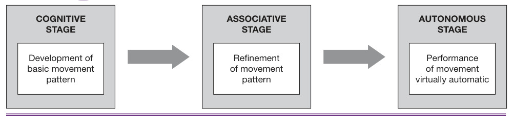
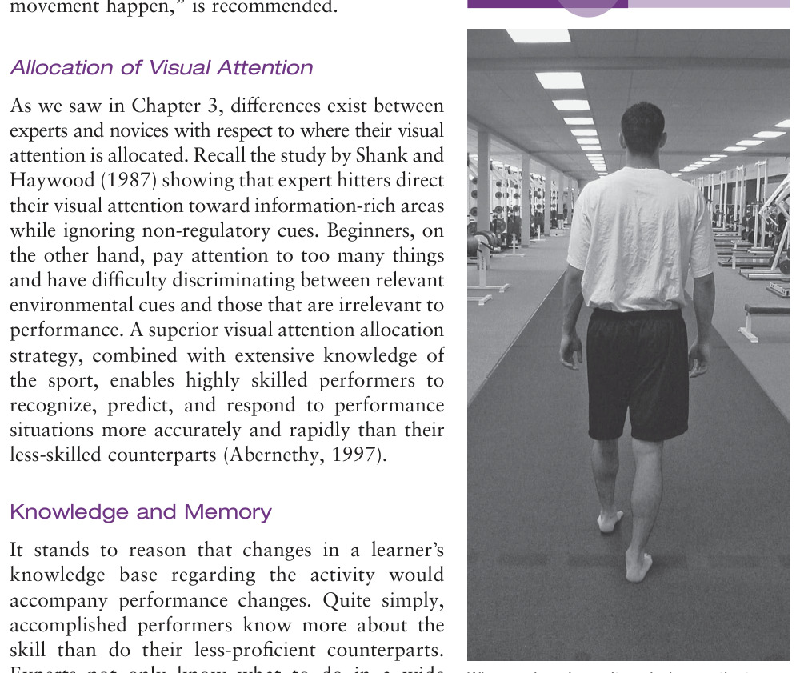
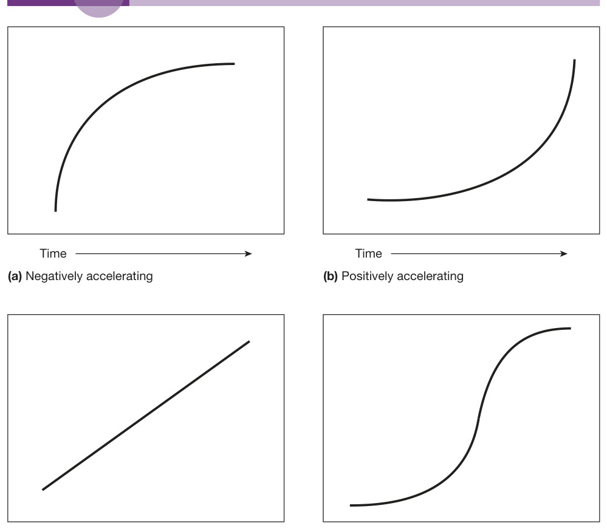
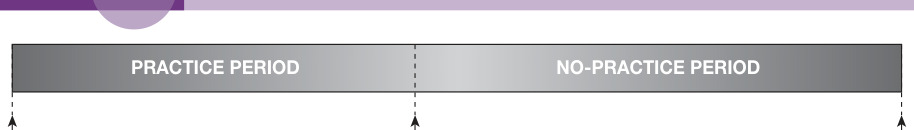

Chương 6 — Các Giai Đoạn Học
Lớn lên ở vùng White Mountains của New Hampshire, Jenny được giới thiệu với môn trượt tuyết năm 5 tuổi và từ đó đến nay vẫn liên tục khắc những đường cong trên tuyết. Giờ đây, ở tuổi 11, cha mẹ đã đăng ký cho em vào trại huấn luyện thi đấu, và em không thể phấn khích hơn được nữa. Đây là bước đầu tiên để hiện thực hóa giấc mơ trở thành nhà vô địch Olympic và World Cup như thần tượng của em, Mikaela Shiffrin!
Cần gì để đi từ những sườn dốc dành cho trẻ mới tập đến trở thành một vận động viên trượt dốc xuống đỉnh cao? Để đạt được trình độ kỹ năng cao như các vận động viên đẳng cấp thế giới thể hiện đòi hỏi năng lực nền tảng cùng với vô số giờ làm việc chăm chỉ và luyện tập — luyện tập dựa trên các nguyên lý nền tảng ảnh hưởng đến tiếp thu kỹ năng và kiểm soát vận động, và luyện tập được thiết kế để đáp ứng nhu cầu thay đổi của người học khi người đó tiến triển qua quá trình học.
CÁC MÔ HÌNH VỀ GIAI ĐOẠN HỌC
Khi phát triển sự thành thạo kỹ năng vận động, dù là trong môn trượt tuyết đổ dốc hay học lại cách đi sau một tai nạn nghiêm trọng, người học đều tiến triển qua nhiều giai đoạn. Nhiều mô hình đã được đề xuất, mỗi mô hình xem xét sự tiến triển từ người mới bắt đầu đến chuyên gia dưới một góc nhìn khác nhau. Các mô hình này có thể giúp người thực hành xác định nhu cầu của người học trong suốt quá trình học và, từ đó, cho phép người thực hành lựa chọn các hoạt động hướng dẫn phù hợp. Khi tìm hiểu từng mô hình, bạn nên lưu ý ba điểm. Thứ nhất, dù các mô hình trình bày mỗi giai đoạn như một giai đoạn riêng biệt, trên thực tế một giai đoạn hòa nhập dần vào giai đoạn tiếp theo và các bước chuyển giữa các giai đoạn học không thể phân định rõ ràng (Fitts & Posner, 1967; Christina & Corcos, 1988). Thứ hai, một người học có thể ở các giai đoạn khác nhau đối với các kỹ năng khác nhau. Ví dụ, một cầu thủ bóng đá có thể được xem là rất thành thạo trong rê bóng nhưng chỉ là người mới bắt đầu với cú đánh đầu, nếu kỹ năng sau mới chỉ được giới thiệu. Cuối cùng, các giai đoạn học không phụ thuộc vào tuổi tác. Hãy hỏi Landon Shuffett, một cầu thủ bi-a chuyên nghiệp được xem là chuyên gia khi mới chỉ 7 tuổi! (Bạn có thể tìm hiểu thêm về anh ấy tại trang web bên cạnh.)
- Người chơi bi-a Landon Shuffett ở tuổi 7: https://www.youtube.com/watch?v=TKQD2Flo9IY8
Mô Hình Ba Giai Đoạn Của Fitts Và Posner
Để thúc đẩy tiếp thu kỹ năng, người thực hành phải hiểu điều gì đang diễn ra trong quá trình học dưới góc nhìn của người học. Một mô hình phổ biến do các nhà tâm lý học Fitts và Posner đề xuất năm 1967 cho rằng người học đi qua ba giai đoạn riêng biệt. Các giai đoạn này được xác định bằng những xu hướng hành vi mà người học thể hiện ở các thời điểm khác nhau trong suốt quá trình học, như thể hiện trong Hình 6.1.

Hình 6.1: Mô hình học ba giai đoạn của Fitts và Posner
Giai đoạn nhận thức (Cognitive Stage) — Phát triển mô hình vận động cơ bản. Giai đoạn liên kết (Associative Stage) — Hoàn thiện mô hình vận động. Giai đoạn tự động (Autonomous Stage) — Thực hiện vận động gần như tự động.
Giai Đoạn Nhận Thức
Giai đoạn đầu tiên, giai đoạn nhận thức, được đặt tên theo mức độ hoạt động nhận thức cao của nó. Trong giai đoạn này, người học lần đầu được giới thiệu với kỹ năng vận động mới, và nhiệm vụ chính của người đó là hình thành sự hiểu biết về các yêu cầu của vận động — hay nói cách khác, mô hình phối hợp cơ bản (Newell, 1985). Người học ở giai đoạn này có thể có rất nhiều câu hỏi. Hãy nhớ lại trải nghiệm tung bắt bóng của bạn trong Chương 1. Những câu hỏi như “Làm thế nào để tôi giữ được bóng?”, “Tôi thả bóng ra khi nào và bằng cách nào?”, “Tôi ném bóng cao đến đâu?”, “Mô hình vận động là gì?” cùng vô số câu hỏi khác có thể đã hiện lên trong tâm trí. Để tìm ra lời giải cho những câu hỏi này, người học thường thử nhiều kỹ thuật và chiến lược khác nhau theo cách thử–sai. Bên cạnh đó, những kinh nghiệm vận động trong quá khứ sẽ được tái cấu trúc nhằm giải quyết vấn đề vận động hiện tại. Các vận động tạo ra vì thế thiếu sự đồng bộ và trông gãy gọn, có chủ đích. Thêm vào đó, trong suốt quá trình này, nhu cầu chú ý rất cao và chỉ giới hạn ở việc tạo ra vận động. Hệ quả là sẽ rõ rệt những khó khăn khi người học được yêu cầu căn chỉnh thời điểm vận động của mình cùng với một vật thể hoặc sự kiện bên ngoài. Thực hiện ở giai đoạn này thiếu nhất quán và đặc trưng bởi nhiều lỗi, thường mang tính thô. Thông qua hướng dẫn bằng lời nói và trình diễn mẫu hiệu quả, và/hoặc việc điều chỉnh có chủ đích các ràng buộc của nhiệm vụ và môi trường, người thực hành có thể thúc đẩy sự tiến triển của người học qua giai đoạn này. Các hướng dẫn nên tính đến thực tế là người học dễ tái cấu trúc kinh nghiệm vận động quá khứ thành mô hình mới hơn nếu những điểm tương đồng và khác biệt giữa chúng được chỉ ra. Hơn nữa, trong khi một người quan sát được đào tạo có thể dễ dàng nhận ra các lỗi đang mắc phải, thì người học lại thiếu khả năng xác định nguyên nhân cụ thể của một lỗi và không thể thực hiện những điều chỉnh cần thiết. Người thực hành đóng vai trò then chốt không chỉ trong việc phát hiện và sửa lỗi, mà còn trong việc giúp người học làm điều tương tự.
Giai Đoạn Liên Kết
Giai đoạn thứ hai, giai đoạn liên kết, được đặc trưng bởi những cải thiện rõ rệt về thực hiện. Sau khi đã thử nhiều chiến lược vận động có thể có, người học ở giai đoạn này bắt đầu cam kết tinh chỉnh một mô hình vận động cụ thể.
Mô hình ấy trở nên nhất quán hơn, và các lỗi dần được giảm bớt. Chẳng hạn, một cầu thủ chuyền bóng ở giai đoạn liên kết đầu có thể thực hiện một đường chuyền sạch sẽ nhưng không phải lúc nào cũng đạt độ chính xác mong muốn. Cũng cần lưu ý rằng khi kỹ năng tiếp tục phát triển, nhu cầu chú ý vào bản thân vận động giảm đi, cho phép người học chú ý đến những việc khác. Những sự mời gọi hành động mới có thể được nhận biết, làm tăng khả năng hành động và khả năng điều chỉnh vận động theo các điều kiện môi trường khác nhau. Điều này giúp người học căn chỉnh thời điểm vận động của mình tốt hơn với các vật thể và sự kiện bên ngoài. Ở giai đoạn này, người học ngày càng có khả năng phát hiện nguyên nhân gây lỗi rồi xây dựng các chiến lược phù hợp để loại bỏ chúng.
Với những đặc điểm thay đổi của người học, vai trò của người thực hành ở giai đoạn này trở thành người thiết kế luyện tập, với nhiệm vụ điều chỉnh các ràng buộc then chốt, mang đến cho người học những cơ hội mới cho hành động và thích ứng. Chìa khóa ở đây là khái niệm thiết kế đại diện (representative design), theo đó các trải nghiệm học được tạo ra để mô phỏng điều kiện thực hiện và những sự mời gọi hành động mà người học sẽ đối mặt trong thi đấu, hoặc khi sử dụng kỹ năng một cách giải trí hoặc trong hoạt động hằng ngày (Orth, van der Kamp, & Button, 2019). Điều quan trọng là, đối với kỹ năng mở, những trải nghiệm này nên giúp phát triển chiến lược tìm kiếm thị giác khi người học ngày càng có khả năng hướng sự chú ý của mình vào các khía cạnh của môi trường thực hiện. Cuối cùng, trong suốt giai đoạn này, việc cung cấp phản hồi hiệu quả tiếp tục đóng vai trò quan trọng, không chỉ để hướng dẫn tinh chỉnh kỹ năng mà còn để phát triển thêm năng lực phát hiện và sửa lỗi của người học.
Giai Đoạn Tự Động
Bước chuyển sang giai đoạn cuối cùng trong mô hình của Fitts và Posner, giai đoạn tự động, đòi hỏi vô số giờ luyện tập. Trên thực tế, không phải người học nào cũng đạt được giai đoạn cuối này. Trong giai đoạn tự động, thực hiện đạt đến mức thành thạo cao nhất và trở nên tự động hóa. Sự chú ý của người học trong giai đoạn này được phân bổ lại cho việc ra quyết định chiến lược. Bên cạnh đó, người học có thể thực hiện đồng thời nhiều nhiệm vụ. Cuối cùng, người học ở giai đoạn này nhất quán và tự tin, mắc ít lỗi, và nhìn chung có thể phát hiện và sửa những lỗi vẫn xảy ra.
CEREBRAL CHALLENGE 6.1 — Thử Thách Trí Não
Hãy tạo một bảng với các tiêu đề cột như dưới đây. Chọn một kỹ năng hoặc nhiệm vụ và lập danh sách các mẹo thực tiễn mà người thực hành có thể làm theo, dựa trên mô tả của Fitts và Posner về các đặc điểm hành vi của người học trong mô hình ba giai đoạn của họ.
KỸ NĂNG/NHIỆM VỤ — NHẬN THỨC — LIÊN KẾT — TỰ ĐỘNG.
HOẠT ĐỘNG KHÁM PHÁ 6.1 — Phân Tích Giai Đoạn Học
Hoạt động 1
Quan sát và so sánh thực hiện đường chuyền bằng cẳng tay của từng cá nhân tại các liên kết web sau:
- www.youtube.com/watch?v=dLyraHkLnrg
- www.youtube.com/watch?v=ccq-b-SKXMU
- www.youtube.com/watch?v=7_CW6jHRYuo
- www.youtube.com/watch?v=lFwltz8xAgE
Dựa trên những quan sát của bạn, hãy dùng mô hình của Fitts và Posner để xác định giai đoạn học mà mỗi người thực hiện đang ở; liệt kê các đặc điểm hành vi cụ thể đã dẫn đến quyết định của bạn.
Hoạt động 2
Quan sát một cuộc thi hoặc buổi luyện tập thể thao thanh thiếu niên trong một kỹ năng do bạn chọn. Chọn năm cá nhân để theo dõi kỹ. Dựa trên những quan sát của bạn, hãy xác định giai đoạn học mà mỗi người thực hiện đang ở và liệt kê những đặc điểm hành vi cụ thể đã dẫn đến quyết định của bạn.
Người ta có thể lầm tưởng rằng khi người học đã đạt đến giai đoạn này, vai trò của người thực hành là tối thiểu. Điều quan trọng cần nhớ là, dù sự thành thạo kỹ năng đã đạt mức cao nhất, vẫn còn chỗ cho cải thiện. Người thực hành vẫn chịu trách nhiệm về thiết kế luyện tập cùng việc phát hiện và sửa lỗi. Những cải thiện về thực hiện rất khó đạt được ở trình độ này, và sự tiến bộ diễn ra chậm đến mức người học có thể nản lòng và mất đi động lực cần thiết để phấn đấu đạt được chúng; người thực hành phải đóng vai trò người tạo động lực để giúp người học đạt đến tiềm năng của mình. Hãy dùng Hoạt động Khám phá 6.1 để áp dụng các giai đoạn của Fitts và Posner vào những người thực hiện ngoài đời thực.
Mô Hình Hai Giai Đoạn Của Gentile
Thay vì chỉ mô tả đặc điểm của người học ở mỗi pha của quá trình học, Gentile (1972, 2000) tiếp cận việc xác định các giai đoạn học từ góc nhìn của người học. Cụ thể hơn, mô hình của Gentile, được minh họa trong Hình 6.2, nhấn mạnh mục tiêu của người học và ảnh hưởng của đặc điểm nhiệm vụ cùng môi trường đến mục tiêu đó.

Hình 6.2: Mô hình học hai giai đoạn của Gentile
Nắm bắt ý tưởng về vận động (Getting the Idea of the Movement) — Phát triển khả năng phân biệt giữa các điều kiện điều tiết và không điều tiết. Cố định (Fixation) — Hoàn thiện mô hình vận động; phát triển mô hình vận động cơ bản. Đa dạng hóa (Diversification) — Thích ứng vận động để phù hợp với các yêu cầu môi trường luôn thay đổi. Kỹ năng đóng (Closed skill) — Kỹ năng mở (Open skill).
Giai Đoạn “Nắm Bắt Ý Tưởng Về Vận Động”
Giai đoạn học đầu tiên trong mô hình của Gentile được gọi là “nắm bắt ý tưởng về vận động.” Theo Gentile, sau khi người học được giới thiệu với một kỹ năng vận động mới, mục tiêu trước hết của người đó là hình thành sự hiểu biết về các yêu cầu vận động cần thiết để đáp ứng những đòi hỏi do đặc điểm của nhiệm vụ và môi trường mà nhiệm vụ được thực hiện đặt ra, rồi sau đó tổ chức một vận động tương ứng. Điều then chốt cho sự thành công của người học trong việc đạt được mục tiêu này là khả năng phân biệt giữa các điều kiện điều tiết và các điều kiện không điều tiết. Như bạn sẽ nhớ lại từ Chương 1, điều kiện điều tiết là những điều kiện môi trường quy định các đặc điểm vận động cần thiết để thực hiện nhiệm vụ. Ngược lại, điều kiện không điều tiết là những yếu tố không liên quan cố hữu đến việc tạo ra đáp án vận động phù hợp. Để tạo ra một mô hình vận động đáp ứng được những đòi hỏi do điều kiện nhiệm vụ và môi trường đặt ra, người học phải có khả năng chú ý chọn lọc vào thông tin liên quan mà vẫn bỏ qua thông tin không liên quan.
Hướng dẫn và luyện tập trong giai đoạn học ban đầu nên thúc đẩy sự phát triển của một mô hình vận động cơ bản. Để làm được điều này, người thực hành phải truyền đạt rõ ràng mục tiêu của nhiệm vụ cho người học, dùng hướng dẫn bằng lời nói, trình diễn mẫu và/hoặc khám phá có hướng dẫn. Bên cạnh đó, người thực hành phải cho người học biết những đặc điểm môi trường nào là điều tiết và những đặc điểm nào là không điều tiết, đồng thời hướng sự chú ý và tìm kiếm thị giác của người đó vào các kích thích liên quan.
Giai Đoạn Cố Định/Đa Dạng Hóa
Khi người học đã nắm được ý tổng quát về vận động cần thiết, người đó tiến sang giai đoạn thứ hai và cũng là giai đoạn cuối, cố định/đa dạng hóa. Trong giai đoạn này, mục tiêu của người học là tinh chỉnh. Bản chất của sự tinh chỉnh ấy phụ thuộc vào mức độ có thể đoán trước của môi trường mà kỹ năng được thực hiện. Hệ quả là mục tiêu của người học sẽ khác nhau đối với kỹ năng đóng và kỹ năng mở. Kỹ năng đóng — chẳng hạn như băng mắt cá chân, thực hiện một bài trên xà cân bằng hoặc chơi nhạc cụ — được thực hiện trong một môi trường cố định, ổn định. Thực hiện thành công những kỹ năng này đòi hỏi người học phải có khả năng tái tạo mô hình vận động một cách nhất quán và chính xác (cố định). Ở chiều ngược lại, kỹ năng mở được thực hiện trong môi trường không đoán trước được và luôn thay đổi. Vì vậy, người thực hiện phải có khả năng liên tục điều chỉnh đáp án để phù hợp với những đòi hỏi luôn thay đổi đó (đa dạng hóa). Với kỹ năng mở, mục tiêu của người học là đa dạng hóa mô hình vận động. Chẳng hạn, một người dùng xe lăn phải có khả năng đổi hướng, đi qua nhiều bề mặt và độ dốc khác nhau, cùng với việc vượt qua chướng ngại vật. Tương tự, một cầu thủ khúc côn cầu phải có khả năng sút puck từ vô số góc độ, khoảng cách và vị trí, cũng như né tránh các cử động của đồng đội và đối thủ.
Khi người học đã đến giai đoạn cố định/đa dạng hóa, chiến lược hướng dẫn được dùng sẽ phụ thuộc vào việc kỹ năng là mở hay đóng. Đối với một kỹ năng đóng — chẳng hạn cú ném phạt, trong đó các điều kiện điều tiết giữ nguyên ở mỗi lần thực hiện liên tiếp — luyện tập nên phản ánh những điều kiện cố định đó (rổ cùng độ cao, cú ném thực hiện từ sau vạch ném phạt, v.v.), đồng thời cho người học tiếp xúc với nhiều tín hiệu không điều tiết thường gặp (tiếng ồn của khán giả, tầm quan trọng của cú ném). Nếu các điều kiện điều tiết thay đổi giữa các lần thử — như trường hợp cú putt trong golf, một kỹ năng đóng có tính biến thiên giữa các lần thử — người học nên luyện tập trong các điều kiện điều tiết khác nhau có thể xuất hiện trong điều kiện chuẩn (ví dụ, putt từ nhiều vị trí và khoảng cách khác nhau trên green, kể cả các độ dốc khác nhau).
Luyện tập cho kỹ năng mở cũng nên phản ánh nhiều điều kiện điều tiết khác nhau. Bởi người học thực hiện kỹ năng mở phải có khả năng đáp trả thành thạo trong những điều kiện môi trường luôn thay đổi và thường không đoán trước được, các biến thể mô phỏng điều kiện chuẩn có thể xảy ra nên được đưa vào luyện tập một cách có hệ thống. Cách tiếp cận này không chỉ giúp người học tích lũy được kho tàng phong phú hơn các khả năng vận động mà còn hỗ trợ phát triển kỹ năng ra quyết định thiết yếu. Vì việc ra quyết định phụ thuộc vào khả năng phát hiện các tín hiệu điều tiết và bỏ qua các kích thích không điều tiết của người học, người thực hành nên tiếp tục làm nổi bật những đặc điểm điều tiết và không điều tiết của môi trường, đồng thời hướng sự chú ý và tìm kiếm thị giác của người học vào các nguồn thông tin liên quan.
CEREBRAL CHALLENGE 6.2 — Thử Thách Trí Não
- Hãy xác định chiến lược nào — cố định (F) hay đa dạng hóa (D) — phù hợp hơn để luyện tập từng kỹ năng sau:
- a. Cú ném phạt (free throw).
- b. Kèm người (bóng đá, bóng rổ, v.v.).
- c. Chuyển từ tư thế ngồi sang tư thế đứng.
- d. Bài tập trên sàn trong thể dục dụng cụ.
- e. Lên và xuống cầu thang.
- f. Nhảy cầu.
- Hãy xem lại mô hình tích hợp nhằm thúc đẩy học vận động và thực hiện đã được giới thiệu trong Chương 1. Giải thích vì sao giai đoạn học là một thành phần quan trọng của hồ sơ tình huống.
CEREBRAL CHALLENGE 6.3 — Thử Thách Trí Não
Hãy tạo một bảng với các tiêu đề cột như dưới đây. Chọn một kỹ năng hoặc nhiệm vụ và lập danh sách các mẹo thực tiễn mà người thực hành có thể làm theo, dựa trên mô hình học hai giai đoạn của Gentile.
KỸ NĂNG/NHIỆM VỤ — NẮM BẮT Ý TƯỞNG VỀ VẬN ĐỘNG — CỐ ĐỊNH — ĐA DẠNG HÓA.
NHỮNG THAY ĐỔI Ở NGƯỜI HỌC VÀ TRONG THỰC HIỆN
Như đã nêu ở trên, rất khó xác định với bất kỳ sự chắc chắn nào thời điểm chính xác khi người học chuyển sang giai đoạn tiếp theo. Vậy làm thế nào để chúng ta biết rằng sự học đã xảy ra? Một trong những phương pháp phổ biến nhất để đánh giá tiến bộ của một cá nhân là ghi nhận những thay đổi trong hành vi vận động có thể quan sát được theo thời gian. Phần này thảo luận một số chỉ báo thực hiện đã được xác định thông qua việc nghiên cứu người thực hiện mới bắt đầu so với chuyên gia, và có thể cung cấp manh mối cho người thực hành về tiến triển của người học.
Mô Hình Vận Động
Không khó để phân biệt cú vung gậy của một cầu thủ bóng chày chuyên nghiệp với cú vung của một người mới bắt đầu. Dù cả hai đều có thể đạt được mục tiêu của nhiệm vụ,
tức là đánh trúng bóng, nhưng mô hình vận động mà họ dùng để làm vậy lại rất khác nhau. Tuy nhiên, khi trình độ của người đánh mới bắt đầu được cải thiện, những khác biệt này sẽ giảm dần. Tương tự, những suy giảm do đột quỵ có thể gây khó khăn trong việc đi lại. Thông qua huấn luyện dáng đi chuyên sâu, hy vọng rằng bệnh nhân sẽ tiến triển từ những bước chậm chạp, có chủ đích (như trong video bên cạnh) sang một mô hình dáng đi phối hợp và hiệu quả hơn.
- Đi lại sau đột quỵ: https://www.youtube.com/watch?time_continue=15&v=g__BYaS9viw&feature=emb_logo
Gia Tăng Phối Hợp Và Kiểm Soát
Sự tiến triển của người học trong tiếp thu kỹ năng thường dẫn đến một số thay đổi liên quan đến việc tạo ra vận động; có lẽ những thay đổi đáng chú ý nhất nằm ở sự phối hợp và kiểm soát. Như đã học trong Chương 4, việc tổ chức một mô hình vận động nhằm đạt hiệu quả mục tiêu của nhiệm vụ đòi hỏi người học phải phối hợp và kiểm soát nhiều yếu tố độc lập hay các bậc tự do. Thường thì ở các giai đoạn đầu của tiếp thu kỹ năng, người học cố gắng đạt được điều này bằng cách đóng băng hoặc cố định các cử động có thể có của một khớp, để các chi sẽ hoạt động như một đơn vị hay một đoạn duy nhất. Nói cách khác, người mới bắt đầu giảm số bậc tự do sẵn có xuống mức dễ quản lý hơn nhằm hoàn thành mục tiêu của nhiệm vụ. Chiến lược này, được gọi là đóng băng các bậc tự do (freezing the degrees of freedom) (Bernstein, 1967; Whiting, 1984), tạo ra những vận động cứng đơ, gượng gạo và căn chỉnh thời điểm kém hiệu quả. Khi người học tiến triển trong phát triển kỹ năng, những bậc tự do từng bị giới hạn sẽ dần được giải phóng và được tổ chức lại tập thể thành một mô hình vận động mới mượt mà hơn, nhanh hơn và giống với vận động đúng hơn.
Hãy xem xét kiểu vung vợt của một người chơi racquetball mới bắt đầu so với của một người chơi rất thành thạo. Người mới bắt đầu sẽ cố kiểm soát cú vung bằng cách hạn chế cử động xảy ra ở mỗi khớp. Hệ quả là người này ban đầu dùng cú vung thẳng tay, trong đó vợt đơn giản được xem như một phần nối dài cứng nhắc của cánh tay (xem Hình 6.3 (a)). Hơn nữa, khả năng lớn là phần thân dưới vẫn giữ không hoạt động. Mô hình phối hợp thể hiện ở một người chơi rất thành thạo, như mô tả trong Hình 6.3 (b), kết hợp nhiều cử động khớp tuần tự (cả thân trên lẫn thân dưới); nhờ hiệu quả sinh cơ học, vận động nhanh hơn đáng kể. Bằng chứng cho sự gia tăng vận tốc này, cũng như cho ý niệm đóng băng rồi dần giải phóng hoặc mở đông các bậc tự do sẵn có, đã được tìm thấy trong các nghiên cứu về tiếp thu cú đánh thuận tay trong racquetball (Southard & Higgins, 1987), cú đá bóng trong bóng đá (Anderson & Sidaway, 1994), học một kỹ năng slalom trên thiết bị trượt tuyết trong nhà (Vereijken et al., 1992), và so sánh chân đá ưu tiên với chân đá không ưu tiên trong cú đá drop punt (Ball, 2011).
Dù chiến lược kiểm soát điển hình được áp dụng là đóng băng ban đầu rồi dần giải phóng các bậc tự do, một số ngoại lệ đã được ghi nhận. Một ví dụ là nghiên cứu trường hợp của Hodges và cộng sự (2005), trong đó sự thay đổi phối hợp

Hình 6.3: Minh họa động học về (a) đóng băng và (b) giải phóng các bậc tự do của cánh tay và vợt trong một cú đánh quyết định môn racquetball
Ghi chú sự cứng đơ của mô hình vận động ở (a) so với việc dùng các khớp tuần tự ở (b).
được kiểm tra trong một nhiệm vụ đá bóng. Cụ thể, nhiệm vụ đòi hỏi một cử động giống như múc bóng vượt qua một rào thấp tới một mục tiêu. Qua luyện tập, tầm vận động (ROM) của các khớp gối và mắt cá chân giảm đi, trong khi tầm vận động ở khớp háng lại tăng lên. Chow, Davids, Button và Koh (2007), khi nghiên cứu các mô hình vận động xuất hiện như hệ quả của sự tương tác giữa ràng buộc nhiệm vụ và giai đoạn học trong một nhiệm vụ đá bóng, đã báo cáo những phát hiện tương tự. Đối với cú sút bóng bổng trong bóng đá, họ ghi nhận một mô hình vận động liên quan đến tầm vận động lớn hơn ở các khớp xa và ít tham gia khớp hơn ở các đoạn gần, ở người chơi thành thạo và trung cấp, so với tầm vận động lớn hơn của chân đá mà người mới bắt đầu thể hiện. Các tác giả cho rằng “có thể rằng người chơi thành thạo và trung cấp có khả năng tối ưu hóa tốt hơn động lực liên đoạn quanh háng và gối để cho phép một vận động chức năng xuất hiện” (tr. 477). Nói cách khác, giải pháp vận động tối ưu cho các ràng buộc nhiệm vụ đặt ra — mãi đến các giai đoạn học sau mới được phát hiện — đòi hỏi tầm vận động lớn hơn ở một khớp và nhỏ hơn ở khớp kia.
Một đề xuất khác được đưa ra là sự xuất hiện của một mô hình phối hợp cụ thể và hướng của việc giải phóng hay đóng băng mang tính đặc thù theo nhiệm vụ (Hong & Newell, 2006; Newell et al., 2003; Palmer et al., 2018). Guimarães et al. (2020) đã tiến hành một rà soát hệ thống để nghiên cứu ý niệm này. Kết quả của họ gợi ý rằng chiến lược kiểm soát bậc tự do mà người học áp dụng phụ thuộc vào sự tương tác giữa phân loại của một kỹ năng và mục tiêu của nó, nhưng họ cũng khuyến nghị cần thêm nghiên cứu để khám phá đầy đủ mối quan hệ này. Dù sao đi nữa, người thực hành phải rất thành thạo không chỉ trong kiến thức về các chỉ báo thực hiện đặc thù theo kỹ năng mà còn trong phân tích kỹ năng.
GHI CHÚ NGHIÊN CỨU (RESEARCH NOTES)
Konczak và các cộng sự (2009) quan tâm đến cách người mới bắt đầu chơi vĩ cầm ở tuổi trưởng thành và tuổi thiếu niên học cách tạo ra các cử động kéo vĩ. Cụ thể hơn, họ phân tích sự phối hợp khớp và độ chính xác của các cử động cánh tay kéo vĩ trong lúc biểu diễn “Twinkle, Twinkle, Little Star” (Biến tấu A của Suzuki), để xem việc học vĩ cầm có được đặc trưng bởi đóng băng rồi giải phóng các bậc tự do hay không. Mười trẻ em và bốn người lớn với mức độ kinh nghiệm khác nhau đã tham gia nghiên cứu. Tám trẻ được xem là người chơi mới bắt đầu với dưới 800 giờ luyện tập cộng dồn trong suốt cuộc đời. Hai trẻ còn lại có khoảng 2.300 giờ luyện tập và được phân loại là người chơi trình độ cao. Nhóm người lớn gồm một người mới bắt đầu (280 giờ luyện tập), một người trình độ cao (1.488 giờ luyện tập) và hai chuyên gia với hơn 10.000 giờ luyện tập cộng dồn. Ba lần thử được thực hiện, và cử động của cánh tay kéo vĩ, cây vĩ cùng tư thế của cây vĩ cầm được phân tích bằng hệ thống ghi hình chuyển động ba chiều. Cụ thể, động học của cây vĩ — bao gồm độ chính xác không gian của các cử động kéo vĩ và các dịch chuyển góc tương ứng của khớp ở cánh tay kéo vĩ — đã được xác định. Kết quả cho thấy việc học kiểm soát cây vĩ không đi theo kiểu đóng băng rồi giải phóng các bậc tự do, mà thay vào đó được đặc trưng bởi sự đóng băng khớp có chọn lọc. Việc đóng băng khớp vai tăng lên theo kinh nghiệm học tập, dù chỉ trong mặt phẳng xung dọc (các cử động gập/duỗi). Ngược lại, người chơi trình độ cao tạo ra chuyển động biên độ lớn hơn ở khớp khuỷu tay. Thêm vào đó, người mới bắt đầu chơi vĩ cầm ở cả trẻ em lẫn người lớn dùng những chiến lược tương tự để giới hạn các bậc tự do, khiến các tác giả cho rằng sự kiểm soát mang tính đặc thù theo nhiệm vụ chứ không phụ thuộc vào tuổi tác.
Hoạt Động Cơ Bắp Linh Hoạt Hơn
Đi kèm với sự tái cấu trúc của hệ thống nhằm tạo ra một mô hình phối hợp mới là sự thay đổi trong hoạt động cơ bắp. Khi người học ngày càng thành thạo, số cơ được kích hoạt cần thiết để tạo ra một vận động sẽ giảm xuống chỉ còn những cơ cơ bản cho việc thực hiện đúng. Thêm vào đó, thời điểm và trình tự kích hoạt các cơ cũng được thay đổi. Vận động lành nghề là kết quả của hành động phối hợp giữa các nhóm cơ (Hall, 2019), nhưng ở giai đoạn đầu của quá trình học, chu kỳ kích hoạt cơ bị sai thời điểm. Điều này đã được ghi nhận trong các kỹ năng thể thao (ví dụ, Jaegars et al., 1989; Lay et al., 2002), các nhiệm vụ vận động nhanh bằng ngón tay và cánh tay (ví dụ, Schneider et al., 1989; Gabriel & Boucher, 1998; Carson & Riek, 2001), và các nhiệm vụ nhắm mục tiêu (ví dụ, Shemmell et al., 2005). Qua luyện tập, các kiểu kích hoạt đúng được thiết lập và vận động trở nên linh hoạt hơn.
Chi Phí Năng Lượng Hiệu Quả Hơn
Khác với các chuyên gia, những người có vận động trông như không tốn sức, người mới bắt đầu kém hiệu quả về mặt cơ học. Điều này dễ thấy ở những người mới học bơi đang học
Hình 6.4: Một cầu thủ xe đạp chuyên nghiệp chỉ dùng những cơ thiết yếu cần thiết để tạo ra một vận động lành nghề, linh hoạt và có vẻ như không tốn sức
cú đạp chân vịt. Vì cơ học kém, nhiều người mới bắt đầu ban đầu không tiến về phía trước, và một số thậm chí còn đi lùi lại trong nước! Bối rối vì không tiến được qua hồ bơi, họ thường đạp mạnh hơn, nhưng vô ích. Cuối cùng mệt mỏi sẽ xuất hiện, và họ phải nghỉ trước khi thử lại kỹ năng. Dễ hiểu là người mới học bơi tiêu tốn rất nhiều năng lượng (và cả sự bực bội) trong nỗ lực của mình. Tuy nhiên, chúng ta biết rằng luyện tập mang lại sự phối hợp tốt hơn, chỉ sử dụng những cơ cần thiết và độ chính xác cao hơn trong kích hoạt cơ. Bạn có thể tự quan sát điều này bằng cách đến một hồ bơi địa phương và trả lời các câu hỏi trong Hoạt động Khám phá 6.2. Thông qua luyện tập, vận động trở nên hiệu quả hơn, và lượng năng lượng cần để thực hiện chúng giảm đi. Cuối cùng, sự giảm chi phí năng lượng này sẽ giúp một người từng bực bội trước đó đi được quãng đường xa hơn với ít lần nghỉ hơn. Để biết thêm thông tin về năng lượng học của vận động con người, xem Sparrow (2000).
Tăng Tính Nhất Quán
Một cách khác để đánh giá tiến bộ của người học là qua những thay đổi về tính nhất quán trong thực hiện. Nhớ lại từ Chương 1 rằng học được định nghĩa là một thay đổi tương đối bền vững trong khả năng thực hiện một kỹ năng vận động của một người, như kết quả của luyện tập hoặc kinh nghiệm. Tính nhất quán gia tăng là dấu hiệu của một thay đổi tương đối bền vững (Yang & Scholz, 2005). Tuy cần lưu ý rằng, dù một người học có thể tái tạo một hành động một cách nhất quán, điều đó không nhất thiết có nghĩa là người đó thực hiện kỹ năng đúng. Người thực hành nên xem xét một số biến số thực hiện trước khi đưa ra phán đoán về sự học. Dù tính nhất quán gia tăng có thể là dấu hiệu của việc học, người thực hành cũng có thể nhìn vào sự xuất hiện của thực hiện không nhất quán để tìm manh mối về tiếp thu kỹ năng. Như đã gợi ý ở trên, một người học có thể phát triển một mô hình vận động nhất quán nhưng về căn bản là sai. Trừ khi vận động được sửa lại, tiến bộ trong tương lai sẽ bị cản trở. Để thay đổi một vận động sai căn bản, người học phải học các đặc điểm bất biến mới, nghĩa là học một chương trình vận động mới. Theo lý thuyết hệ thống động lực (xem Chương 4), người học phải chuyển từ một trạng thái
HOẠT ĐỘNG KHÁM PHÁ 6.2 — Quan Sát: Người Bơi Chuyên Gia So Với Người Mới Bắt Đầu
Hãy đến một hồ bơi địa phương.
- a. Theo dõi một người mới học bơi thực hiện kiểu bơi tự do trong vài phút. Mô tả kỹ thuật của người đó. Liệt kê các cơ tham gia thực hiện kỹ thuật ấy. Sau đó quan sát một người bơi tự do thành thạo hơn. Mô tả kỹ thuật của người đó. Một lần nữa, ghi chú các cơ tham gia vào thực hiện.
- b. Bạn đã quan sát những khác biệt về thể chất nào giữa cách hai người học thực hiện kiểu bơi tự do?
sang một trạng thái ổn định mới (một sự chuyển pha). Sự chuyển tiếp này, bất kể được mô tả thế nào, ban đầu sẽ được đặc trưng bởi tính không nhất quán gia tăng khi người học cố gắng từ bỏ vận động cũ để chuyển sang mô hình phối hợp mới. Cuối cùng, với luyện tập, người học sẽ bắt đầu tạo ra vận động mới, và với luyện tập tiếp tục, vận động đó sẽ trở nên nhất quán.
Chú Ý
Những thay đổi về cả lượng chú ý có ý thức dành cho việc thực hiện vận động lẫn sự phân bổ chú ý thị giác cũng đi kèm với sự phát triển kỹ năng. Những thay đổi này dẫn đến việc chuẩn bị vận động nhanh hơn, chính xác hơn và sự giảm tương ứng về thời gian đáp án.
GHI CHÚ NGHIÊN CỨU (RESEARCH NOTES)
Dùng một nhiệm vụ chèo thuyền, Lay và cộng sự (2002) đã kiểm tra ảnh hưởng của luyện tập đến phối hợp và kiểm soát, chi phí năng lượng trao đổi chất và kích hoạt cơ. Sáu tình nguyện viên nam khỏe mạnh, không có kinh nghiệm chèo thuyền, đã chèo trên một máy ergometer với công suất không đổi định trước là 100 W trong mười buổi, mỗi buổi 16 phút. Dữ liệu cho thấy tính kinh tế vận động được cải thiện dựa trên sự giảm đáng kể mức tiêu thụ oxy và cảm giác nỗ lực. Bên cạnh đó, các nhà nghiên cứu phát hiện phương sai thấp hơn đáng kể ở lực đỉnh tác dụng lên tay cầm của máy và sự giảm đáng kể nhịp chèo. Hơn nữa, dữ liệu điện cơ cho thấy kích hoạt cơ giảm đi và phối hợp tăng lên dựa trên những thay đổi trong kiểu kích hoạt. Vì vậy, những kết quả này chứng minh chi phí năng lượng trao đổi chất của thực hiện giảm đi và sự phối hợp cùng kiểm soát được cải thiện nhờ luyện tập.
CEREBRAL CHALLENGE 6.4 — Thử Thách Trí Não
Vừa mới giới thiệu một lớp bóng đá mới bắt đầu với kỹ năng rê bóng, giáo viên thiết kế một bài tập trong đó người học ghép cặp và một người rê bóng đến đầu kia của sân trong khi tránh người chơi kia, người này cố giành lấy bóng. Liệu đây có phải là một bài tập hiệu quả? Hãy biện giải câu trả lời của bạn.
Chú Ý Vào Việc Thực Hiện Kỹ Năng
Ban đầu, người học tập trung vào cách thực hiện từng thành phần kỹ thuật của một kỹ năng, dồn toàn bộ sự chú ý vào việc thực hiện kỹ năng ấy. Khi sự thành thạo kỹ năng phát triển, nhu cầu chú ý có ý thức vào từng khía cạnh của vận động giảm đi; cuối cùng (sau một lượng lớn luyện tập) thực hiện trở nên gần như tự động. Tư duy có ý thức không còn cần thiết để thực hiện vận động. Trong suốt quá trình chuyển tiếp này, thực hiện biểu lộ thay đổi, và sự lúng túng ban đầu với vẻ ngoài robot dần trở thành một thực hiện mượt mà, trôi chảy và có vẻ như không tốn sức.
Khi người học đạt đến điểm mà kỹ năng có thể được thực hiện với ít hoặc không có kiểm soát có ý thức, hai hệ quả xuất hiện. Thứ nhất, người học giờ có thể phân bổ lại nguồn lực chú ý sang các yếu tố khác của thực hiện. Ví dụ, trong cú đập bóng chuyền, người học có thể tập trung vào chiến lược thi đấu (chẳng hạn, đặt bóng vào vị trí nào trong sân đối phương) thay vì dồn sự chú ý vào kỹ thuật sẽ dẫn đến tiếp xúc bóng thành công. Người học trở nên có khả năng tập trung vào và đánh giá ngữ cảnh môi trường tốt hơn, từ đó đáp trả nhanh hơn và phù hợp hơn với các điều kiện thực hiện.
Bây giờ hãy quan sát điều gì xảy ra trong Hoạt động Khám phá 6.3. Từ hoạt động này, bạn có thể thấy hệ quả thứ hai của tự động hóa; một khi đạt được, kiểm soát có ý thức đối với vận động thậm chí có thể gây hại cho thực hiện. Khi một người thực hiện cố ý tập trung vào các chi tiết cụ thể của một kỹ năng đã học kỹ mà thông thường được thực hiện tự động, thông tin cần thiết để phối hợp kiểu cơ bắp bị chậm lại (Byers, 2000). Thực hiện tạo ra vì thế trở nên
HOẠT ĐỘNG KHÁM PHÁ 6.3 — Hành Vi Tự Động
Mỗi người khỏe mạnh đều có nhịp đi bộ tự nhiên của riêng mình. Nếu có thể, hãy xác định nhịp tự nhiên của bạn bằng cách đi lại trong một hành lang vài lần.
Câu hỏi:
- Mô tả điều đã xảy ra khi bạn cố xác định nhịp đi bộ tự nhiên của mình.
- Khi một người thực hành yêu cầu một bệnh nhân đi lại tự nhiên qua phòng khám để đánh giá dáng đi của người đó, bạn có mong đợi kết quả tương tự không? Hãy đưa ra gợi ý để giúp đảm bảo một đánh giá chính xác.
lúng túng và gãy gọn. Nên áp dụng chiến lược “không nhận biết,” trong đó người thực hiện đơn giản là “để vận động tự diễn ra.”

Hình 6.5: Khi trải qua phân tích dáng đi, một bệnh nhân có thể trở nên nhận thức được các cử động của mình và thay đổi kiểu đi tự nhiên
Phân Bổ Sự Chú Ý Thị Giác
Như đã thấy trong Chương 3, có những khác biệt giữa chuyên gia và người mới bắt đầu về nơi sự chú ý thị giác của họ được phân bổ. Hãy nhớ lại nghiên cứu của Shank và Haywood (1987) cho thấy những người đánh bóng chuyên gia hướng sự chú ý thị giác vào các vùng giàu thông tin trong khi bỏ qua các tín hiệu không điều tiết. Ở chiều ngược lại, người mới bắt đầu chú ý đến quá nhiều thứ và gặp khó khăn trong việc phân biệt giữa các tín hiệu môi trường liên quan và những tín hiệu không liên quan đến thực hiện. Một chiến lược phân bổ chú ý thị giác vượt trội, kết hợp với kiến thức sâu rộng về môn thể thao, giúp người thực hiện có kỹ năng cao nhận ra, dự đoán và đáp trả các tình huống thực hiện chính xác và nhanh hơn những người ít kỹ năng hơn (Abernethy, 1997).
Kiến Thức Và Trí Nhớ
Hợp lý mà nói, những thay đổi trong cơ sở kiến thức của người học về hoạt động sẽ đi kèm với những thay đổi trong thực hiện. Đơn giản là, người thực hiện thành đạt biết nhiều về kỹ năng hơn những người ít thành thạo hơn. Chuyên gia không chỉ biết phải làm gì trong nhiều tình huống khác nhau; họ còn biết cách và khi nào nên áp dụng kiến thức đó (Singer & Janelle, 1999). Họ có mức cao hơn ở cả kiến thức tường minh (ví dụ, luật lệ) lẫn kiến thức tiềm ẩn (ví dụ, phải làm gì trong một tình huống nhất định), cho họ một cơ sở kiến thức lớn hơn để rút ra (Thomas & Thomas, 1994).
Cấu trúc của cơ sở kiến thức ấy (riêng cho hoạt động đó) được thấy là phức tạp hơn ở người thực hiện có kỹ năng và được tổ chức theo cách tạo điều kiện cho nhận diện mô hình và gợi nhớ. Điều này đã được Allard, Graham và Paarsalu (1980) chứng minh, khi họ thấy người chơi bóng rổ chuyên gia vượt trội hơn người mới bắt đầu trong một nghiên cứu gợi nhớ. Người tham gia được cho xem hai bộ slide mô tả các tình huống thi đấu bóng rổ; một bộ trình bày các tình huống có cấu trúc và bộ kia các tình huống không có cấu trúc. Sau bốn giây xem, người tham gia được yêu cầu tái tạo slide bằng các nam châm đại diện cho cầu thủ trên một bảng nam châm đại diện cho một nửa sân bóng rổ. Các chuyên gia
GHI CHÚ NGHIÊN CỨU (RESEARCH NOTES)
Để khám phá sự khác biệt về cơ chế chú ý như một hàm của trình độ kỹ năng, Beilock et al. (2002) đã kiểm tra thực hiện rê bóng của người mới bắt đầu và cầu thủ bóng đá có kinh nghiệm qua một lộ trình slalom trong điều kiện nhiệm vụ kép và điều kiện tập trung vào kỹ năng. Điều kiện nhiệm vụ kép liên quan đến việc rê bóng qua lộ trình đồng thời theo dõi một danh sách từ và lặp lại toa từ đích mỗi khi nghe thấy nó. Trong điều kiện tập trung vào kỹ năng, người tham gia được nhắc tập trung vào một thành phần cụ thể của nhiệm vụ rê bóng. Người tham gia thực hiện nhiệm vụ trong cả hai điều kiện bằng cả chân thuận và chân không thuận. Như mong đợi, với rê bóng bằng chân thuận, người mới bắt đầu bị phân tâm trong điều kiện nhiệm vụ kép và thực hiện ở mức thấp hơn so với điều kiện tập trung vào kỹ năng, vốn được thiết kế để hướng sự chú ý của họ vào việc thực hiện vận động. Kiểu kết quả ngược lại được thấy ở những cầu thủ có kinh nghiệm, với thực hiện suy giảm khi họ tập trung vào thực hiện kỹ năng.
được thấy vượt trội hơn người mới bắt đầu chỉ trong việc gợi nhớ các tình huống có cấu trúc. Vì sự vượt trội của chuyên gia chỉ rõ rệt trong điều kiện thi đấu, có vẻ như chuyên gia có thể xây dựng một biểu diễn tốt hơn về vấn đề nhờ khả năng tổ chức hay gom thông tin thành những đơn vị có ý nghĩa (Allard, 1982). Khả năng này, cùng với cơ sở kiến thức lớn hơn, giúp họ truy cập thông tin hiệu quả hơn, tập trung vào các khái niệm bậc cao, tạo nhiều liên kết hơn giữa các khái niệm và giải quyết vấn đề nhanh hơn với ít lỗi hơn (Thomas, French, & Humphries, 1986; McPherson & Thomas, 1989). Những kết quả tương tự đã được tìm thấy trong cờ vua (Chase & Simon, 1973), snooker (Abernethy, Neal, & Koning, 1994) và múa (Smyth & Pendleton, 1994). Để xem lại sự phát triển kiến thức trong thể thao, xem Iglesias et al. (2010).
Phát Hiện Và Sửa Lỗi
Một chỉ báo khác của sự phát triển kỹ năng là khả năng gia tăng của người học trong việc phát hiện và sửa lỗi thực hiện. Qua luyện tập, người học phát triển khả năng giám sát và giải thích phản hồi ngoại cảm giác và tự cảm giác mà các thụ thể cảm giác khác nhau cung cấp. Thông tin này có thể được dùng hoặc để sửa lỗi trong lúc vận động (nếu thời gian cho phép), hoặc để hướng dẫn những lần thử sau. Khi năng lực phát hiện và sửa lỗi của họ được cải thiện, người học sẽ giảm phụ thuộc vào người thực hành. Những câu hỏi như “Lần đó tôi đã làm gì?” sẽ giảm đi, và các câu hỏi trở nên cụ thể hơn. Người học cũng sẽ thể hiện những hành vi cho thấy họ biết mình đã mắc lỗi. Chẳng hạn, khi
CEREBRAL CHALLENGE 6.5 — Thử Thách Trí Não
Hãy liệt kê ví dụ về kiến thức tường minh và kiến thức tiềm ẩn cho một kỹ năng do bạn chọn.
Kỹ năng: … Kiến thức tường minh: … Kiến thức tiềm ẩn: …
phát bóng trong quần vợt, nếu cú ném bóng lên bị lệch, người học ít kỹ năng có thể vẫn cố đánh bóng, làm ảnh hưởng đến kết quả; người học thành thạo hơn sẽ nhận ra cú ném bóng hỏng và để bóng rơi xuống để có thể thử lại.
Sự Tự Tin
Khi người học ngày càng thành thạo hơn, sự tự tin vào khả năng thực hiện kỹ năng của họ sẽ tăng lên. Cùng với sự tự tin gia tăng là động lực lớn hơn để cải thiện thêm. Vì vậy, khi thiết kế trải nghiệm học, người thực hành nên đảm bảo mỗi người học được trải nghiệm một mức độ thành công nhất định trong mỗi buổi luyện tập. Chase et al. (1994) ủng hộ chiến lược này; khi trẻ em học ném bóng rổ, việc thay đổi chiều cao của rổ từ 10 feet quy định xuống 8 feet đã có ảnh hưởng tích cực đến cảm giác tự hiệu quả và thực hiện cú ném của các em.
ĐO LƯỜNG TIẾN BỘ
Bên cạnh việc đánh giá tiến bộ của một cá nhân một cách chủ quan bằng cách quan sát những biến đổi trong thực hiện theo thời gian, người thực hành có thể dùng một số thước đo đánh giá khách quan để kiểm tra hiệu quả của các chiến lược huấn luyện hoặc hướng dẫn. Những kỹ thuật này cho phép người thực hành ghi lại những thay đổi về trình độ bằng cách lượng hóa sự học dựa trên các chỉ báo thực hiện như thời gian, khoảng cách và tần suất, nhằm chứng minh sự cải thiện, bền bỉ, nhất quán và/hoặc khả năng thích ứng.
CEREBRAL CHALLENGE 6.6 — Thử Thách Trí Não
Hãy xem video về một người mới bắt đầu ghi lại trải nghiệm học lướt sóng của cô ấy trong thời gian năm tháng. Hãy mô tả những thay đổi đã xảy ra trong suốt quá trình học. https://www.youtube.com/watch?v=jpkTfJhxIuA
Đường Cong Thực Hiện
Đường cong thực hiện được thu được bằng cách vẽ có hệ thống kết quả từ những lần đo lặp lại một biến số thực hiện cụ thể theo thời gian. Đồ thị thu được cung cấp cho người thực hành hai thông tin. Thứ nhất, hướng chung của đường cong cho thấy sự cải thiện. Thứ hai, bằng cách xem xét các lần thử liên tiếp, người thực hành có thể rút ra suy luận về tính nhất quán.
Để dựng một đường cong thực hiện, trước hết hãy chọn một biến số thực hiện có thể đánh giá được và là chỉ báo phù hợp của kỹ năng. Ví dụ, bài kiểm tra với tới chức năng (functional reach test) (Duncan et al., 1990) có thể được dùng để đánh giá tác động của một chương trình phục hồi chức năng nhằm giúp bệnh nhân lấy lại khả năng kiểm soát tư thế. Để thực hiện bài kiểm tra, bệnh nhân đứng với hai chân rộng bằng vai và một vai gập 90 độ, sao cho cánh tay song song với sàn. Sau đó bệnh nhân với tay về phía trước xa nhất có thể mà vẫn giữ thăng bằng. Khoảng cách với tới được đo và ghi lại. Trong bài kiểm tra thực hiện giả định thể hiện ở Hình 6.6, bệnh nhân được kiểm tra một lần mỗi tuần trong 12 tuần. Trên đồ thị, khoảng cách với tới (tính bằng inch) được vẽ trên trục thẳng đứng và số tuần trong bài kiểm tra thực hiện được vẽ trên trục ngang.

Hình 6.6: Đường cong thực hiện giả định cho bài kiểm tra với tới chức năng
Khoảng cách (tính bằng inch) trên trục thẳng đứng: từ 0 đến 8; số tuần trên trục ngang: từ 1 đến 12. Bệnh nhân được kiểm tra mỗi tuần một lần trong 12 tuần.
Các Loại Đường Cong Thực Hiện
Nhìn chung, đường cong thực hiện theo một trong bốn kiểu (xem Hình 6.7):
- Đường cong giảm tốc độ tăng dần phản ánh định luật luyện tập theo lũy thừa (power law of practice). Khi học một kỹ năng mới, cá nhân có xu hướng thể hiện sự cải thiện lớn ban đầu về thực hiện, rồi chậm dần về sau trong luyện tập (Newell & Rosenbloom, 1981). Đây là đường cong thực hiện phổ biến nhất.
- Đường cong tăng tốc độ tăng dần được đặc trưng bởi ít cải thiện ban đầu nhưng mức tăng lớn hơn về sau.

Hình 6.7: Các loại đường cong thực hiện
Trục thời gian — (a) Giảm tốc độ tăng dần; (b) Tăng tốc độ tăng dần; (c) Đường thẳng; (d) Hình chữ S.
- Đường cong tuyến tính phản ánh mối quan hệ trực tiếp giữa thực hiện và thời gian.
- Đường cong hình chữ S là sự kết hợp giữa đường cong giảm tốc độ tăng dần và đường cong tăng tốc độ tăng dần.
Khi đọc các đường cong thực hiện, hãy nhớ rằng bản chất của đường cong phụ thuộc vào điều đang được đo. Ví dụ, nếu biến số thực hiện được đo là thời gian, và sự giảm thời gian cần để thực hiện kỹ năng cho thấy thực hiện được cải thiện, thì đường cong sẽ bị đảo ngược.
Hạn Chế Của Đường Cong Thực Hiện
Dù là phương pháp phổ biến để ghi lại tiến bộ, đường cong thực hiện vẫn có một số hạn chế. Để hiểu hạn chế thứ nhất, chúng ta cần xem lại các đặc điểm phân biệt giữa thực hiện và học. Hãy nhớ rằng học dẫn đến một thay đổi tương đối bền vững trong khả năng thực hiện một kỹ năng vận động của một người, trong khi thực hiện đơn giản là hành động thực hiện một kỹ năng. Vì các thước đo cho đường cong thực hiện được lấy trong lúc một cá nhân đang luyện tập một kỹ năng, những thước đo này phản ánh các hiệu ứng tạm thời và không thể xác lập tính bền vững tương đối. Chính vì lý do đó mà chúng được gọi là đường cong thực hiện chứ không phải đường cong học.
Hạn chế thứ hai đến từ việc tính giá trị trung bình của một số lần thử trong một buổi nhất định để có được các số liệu dùng dựng đường cong. Ví dụ, hai người cùng học juggling có thể có số lần bắt được bóng trung bình giống nhau, nhưng thực hiện của họ ở mỗi lần thử lại có thể rất khác nhau. Hãy xem xét dữ liệu về thực hiện juggling của hai người học như thể hiện trong Bảng 6.1. Mỗi người thực hiện mười lần thử trong một buổi, và kết quả
Bảng 6.1: Dữ liệu cá nhân về juggling (số lần bắt được bóng trong mỗi lần thử của một buổi gồm mười lần thử) cho hai người học khác nhau
- Lần thử 1 — Người học A: 5; Người học B: 1.
- Lần thử 2 — Người học A: 5; Người học B: 6.
- Lần thử 3 — Người học A: 4; Người học B: 0.
- Lần thử 4 — Người học A: 4; Người học B: 11.
- Lần thử 5 — Người học A: 5; Người học B: 3.
- Lần thử 6 — Người học A: 4; Người học B: 6.
- Lần thử 7 — Người học A: 5; Người học B: 2.
- Lần thử 8 — Người học A: 5; Người học B: 2.
- Lần thử 9 — Người học A: 4; Người học B: 14.
- Lần thử 10 — Người học A: 4; Người học B: 0.
- Trung bình — Người học A: 4.5; Người học B: 4.5.
CEREBRAL CHALLENGE 6.7 — Thử Thách Trí Não
Ba người học được yêu cầu luyện tập juggling 10 phút mỗi ngày trong mười ngày liên tiếp. Số lần bắt được bóng trung bình mỗi ngày được tính bằng cách chia tổng số lần bắt được bóng cho số lần thử. Số lần bắt được bóng trung bình mỗi ngày của từng người học được biểu diễn trong đồ thị dưới đây.
- Hãy phân loại đường cong thực hiện của từng người tham gia dựa trên bốn loại đã thảo luận và minh họa trong Hình 6.7.
- Bạn có thể rút ra kết luận gì từ dữ liệu được trình bày?
Trục thẳng đứng: số lần bắt được bóng trung bình, từ 0 đến 4; trục ngang: ngày, từ 1 đến 10; ba người tham gia: Participant 1, Participant 2 và Participant 3.
giá trị trung bình của mười lần thử bằng nhau: 4.5. Tuy nhiên, thực hiện của người học A tương đối nhất quán giữa các lần thử, trong khi người học B cho thấy dải điểm rộng hơn nhiều. Nếu chỉ nhìn vào giá trị trung bình, chúng ta có thể bỏ lỡ thông tin quý giá về quá trình học. Hãy nhớ rằng tính nhất quán trong thực hiện được cải thiện là một chỉ báo của việc học. Độ lệch chuẩn trong thực hiện juggling của hai người học xác nhận rằng người học A (SD = 0.53) có tính biến thiên thực hiện thấp hơn người học B (SD = 4.77), cho thấy trình độ kỹ năng cao hơn. Vì vậy, nhiều thước đo thực hiện khác nhau cho phép rút ra kết luận tốt hơn về sự học.
Các Bài Kiểm Tra Duy Trì Và Chuyển Giao
Các bài kiểm tra duy trì và chuyển giao được dùng để suy luận rằng một thay đổi tương đối bền vững trong thực hiện đã xảy ra. Nói cách khác, chúng được dùng để xem liệu bệnh nhân, học sinh, vận động viên hay khách hàng có thực sự học hay không. Bài kiểm tra duy trì đo lường sự bền bỉ của thực hiện kỹ năng đã được cải thiện. Khác với bài kiểm tra sau, được tiến hành ngay sau một giai đoạn luyện tập (có thể là một buổi hoặc nhiều buổi) và dùng để tìm hiểu người học có thể làm được gì sau khi luyện tập một

Hình 6.8: Tiến trình bài kiểm tra duy trì
Giai đoạn luyện tập (Practice Period) — Giai đoạn không luyện tập (No-Practice Period). Kiểm tra trước (Pretest) → Kiểm tra sau (Post-test) → Kiểm tra duy trì (Retention test).
kỹ năng, bài kiểm tra duy trì được tiến hành sau một khoảng thời gian mà người học không tham gia bất kỳ luyện tập nào (xem Hình 6.8). Mức thực hiện thu được sau đó được so sánh với mức thực hiện ban đầu của cùng kỹ năng ấy (bài kiểm tra trước được tiến hành trước giai đoạn luyện tập). Nếu phép so sánh cho thấy mức cải thiện cao, bạn có thể suy luận rằng sự học đã xảy ra.
Vì một mục tiêu chính của luyện tập là có thể duy trì điều đã học để dùng về sau, bài kiểm tra duy trì cũng có thể được dùng như một công cụ đánh giá trước. Ví dụ, vào mùa thu, một lớp giáo dục thể chất tiểu học đã hoàn thành một học phần nhằm hoàn thiện các kỹ năng vận động căn bản, bao gồm trượt bước và nhảy chân chẵn. Về sau, vào mùa xuân, trượt bước và nhảy chân chẵn sẽ là nền tảng cho việc học các kỹ năng phức tạp, chuyên biệt hơn trong một học phần múa. Thông qua bài kiểm tra duy trì, giáo viên có thể xác định liệu học sinh có thực sự duy trì được trình độ thành thạo trong trượt bước và nhảy chân chẵn trước khi bắt đầu học phần mới hay không. Nếu mức duy trì không đạt như kỳ vọng, giáo viên sẽ cần ôn lại những kỹ năng được cho là đã học trước đó trước khi giới thiệu học phần múa và cố gắng xây dựng tiếp trên những kỹ năng ấy (trao đổi cá nhân, Lynn V. Johnson, ngày 27 tháng 3 năm 2012).
Loại đánh giá thứ hai có thể được dùng để phân biệt giữa những thay đổi thực hiện tạm thời và bền vững là bài kiểm tra chuyển giao. Bài kiểm tra chuyển giao đo lường mức độ mà một người học có thể điều chỉnh kỹ năng đã luyện tập sang một tình huống thực hiện khác. Những biến thể của bản thân kỹ năng hoặc của môi trường mà kỹ năng được thực hiện có thể đóng vai trò kiểm tra khả năng thích ứng và cho phép người thực hành suy luận về sự học. Ví dụ, bài kiểm tra chuyển giao cho một bệnh nhân đang học thực hiện động tác từ ngồi sang đứng có thể liên quan đến một độ cao ghế hoặc bề mặt mới (ví dụ, cứng so với có đệm). Bài kiểm tra chuyển giao cho việc volley bóng trong môn bóng ném có thể yêu cầu người học đánh bóng sau khi bóng nảy ra từ tường sau thay vì tường trước. Một nguồn tài nguyên hữu ích để thiết kế bài kiểm tra chuyển giao là hệ thống phân loại của Gentile (2000), đã thảo luận trong Chương 1.
Các Giai Đoạn Đình Trệ Thực Hiện
Người thực hành phải cẩn thận, không giả định rằng sự học đã chấm dứt khi thực hiện không còn cải thiện nữa. Có thể người học đang trải qua một giai đoạn đình trệ thực hiện — một khoảng thời gian trong quá trình học mà không có sự thay đổi biểu lộ nào trong thực hiện. Một lần nữa, điều quan trọng là người thực hành
phải có khả năng phân biệt giữa những thay đổi tạm thời trong thực hiện và những thay đổi tương đối bền vững, những điều cho thấy sự học.
Hãy nhớ rằng sự học không thể quan sát trực tiếp. Chúng ta không thể thấy người khác tri giác điều gì, không thể thấy người đó đang nghĩ gì, và không thể thấy những thay đổi trong các quá trình hành vi và thần kinh tiềm ẩn.
Thomas và Thomas (1994) nhắc nhở chúng ta rằng “biết khi nào và như thế nào không đồng nghĩa với việc thực hiện hoạt động” (tr. 296). Các giai đoạn đình trệ thường đại diện cho những thời kỳ chuyển tiếp trong quá trình học, khi sự tích hợp các thành phần của nhiệm vụ (và có thể cả chiến lược) đang được giải quyết. Do đó, các giai đoạn đình trệ thực hiện không nhất thiết cho thấy người học đã ngừng học; thay vào đó, đình trệ là một phần bình thường của quá trình học. Những biến số như mệt mỏi, lo âu hoặc thiếu động lực cũng có thể tạm thời ảnh hưởng đến thực hiện, dẫn đến một giai đoạn đình trệ. Cuối cùng, đình trệ có thể là kết quả của những hạn chế trong phép đo thực hiện được dùng. Hiệu ứng trần và hiệu ứng đáy xảy ra khi có một điểm số tối đa hoặc tối thiểu có thể đạt được trong một nhiệm vụ. Ví dụ, nếu số cú ném phạt thành công trung bình trong mười lần của một người học được vẽ trên đường cong thực hiện, khi người đó tiến gần đến trần (mười), đường cong thực hiện sẽ bắt đầu đi ngang.
ĐƯA VÀO THỰC TIỄN (PUTTING IT INTO PRACTICE)
Tình Huống Học Tập: Học Đường Chuyền Gián Tiếp Trong Khúc Côn Cầu
Jennifer cũng làm việc với nhóm Squirts (9–10 tuổi). Ở cấp độ này, đường chuyền gián tiếp tới một mục tiêu đang di chuyển được giới thiệu. Trợ lý của cô nhắc cô về bài tập mà anh đã gợi ý trước đó và nghĩ rằng đó sẽ là bài tập tốt để bắt đầu sau khi kỹ năng đã được giới thiệu và trình diễn mẫu.
Kiểm Tra Kiến Thức Của Bạn
Hãy quay lại bài tập được nêu ở cuối Chương 3. Bài tập này nhắm vào người học ở giai đoạn nhận thức hay liên kết? Jennifer có nên bắt đầu với bài tập này như trợ lý của cô đã gợi ý không? Hãy biện giải câu trả lời của bạn. So sánh câu trả lời của bạn với câu trả lời mẫu tại www.routledge.com/cw/coker.
NHÌN VỀ PHÍA TRƯỚC (A LOOK AHEAD)
Người học tiến triển qua các giai đoạn học riêng biệt khi họ tiếp thu một kỹ năng. Mỗi giai đoạn được đặc trưng bởi cả những thay đổi hành vi lẫn sự điều chỉnh trong mục tiêu của người học. Bên cạnh đó, một số chỉ báo ở người học và trong thực hiện đã được xác định để giúp người thực hành suy luận về sự phát triển kỹ năng. Việc hiểu
QUAN NIỆM SAI (COMMON MYTH)
Trừ khi một người học thể hiện những thay đổi biểu lộ rõ ràng trong thực hiện, người đó không còn đang học nữa.
đặc điểm của từng giai đoạn học, bên cạnh khả năng đánh giá mức thành thạo của người học, có thể hỗ trợ việc ra quyết định của người thực hành liên quan đến cách truyền đạt hướng dẫn, thiết kế luyện tập và trải nghiệm, cùng việc cung cấp phản hồi. Chương tiếp theo bắt đầu cuộc thảo luận về cách thiết kế môi trường học phù hợp bằng cách xem xét những yếu tố trước khi hướng dẫn ảnh hưởng đến giao tiếp.
ĐIỂM TRỌNG TÂM (FOCUS POINTS)
Sau khi đọc chương này, bạn nên biết:
- Theo Fitts và Posner, người học đi qua ba giai đoạn riêng biệt:
- Giai đoạn nhận thức: phát triển mô hình vận động cơ bản.
- Giai đoạn liên kết: hoàn thiện mô hình vận động.
- Giai đoạn tự động: thực hiện vận động gần như tự động.
- Mô hình hai giai đoạn của Gentile nhấn mạnh mục tiêu của người học và ảnh hưởng của đặc điểm nhiệm vụ cùng môi trường đến mục tiêu đó.
- Giai đoạn 1: nắm bắt ý tưởng về vận động.
- Giai đoạn 2: cố định (kỹ năng đóng)/đa dạng hóa (kỹ năng mở).
- Để suy luận rằng sự học đã xảy ra, người thực hành có thể đánh giá nhiều thay đổi trong thực hiện, bao gồm thay đổi về phối hợp và kiểm soát, hoạt động cơ bắp, chi phí năng lượng, tính nhất quán, tiêu điểm chú ý, kiến thức và trí nhớ, phát hiện và sửa lỗi, cùng sự tự tin.
- Tiến bộ cũng có thể được đánh giá thông qua đường cong thực hiện, bài kiểm tra duy trì và bài kiểm tra chuyển giao.
- Bài kiểm tra duy trì đo lường sự bền bỉ của thực hiện kỹ năng đã được cải thiện.
- Bài kiểm tra chuyển giao đo lường mức độ mà người học có thể điều chỉnh kỹ năng đã luyện tập sang một tình huống thực hiện khác.
- Giai đoạn đình trệ thực hiện là một khoảng thời gian trong quá trình học mà không có thay đổi biểu lộ nào trong thực hiện. Các giai đoạn đình trệ thường đại diện cho những thời kỳ chuyển tiếp trong quá trình học, khi sự tích hợp các thành phần của nhiệm vụ (và có thể cả chiến lược) đang được giải quyết; chúng không nhất thiết cho thấy sự chấm dứt của quá trình học.
Thí Nghiệm 6
Để hoàn thành thí nghiệm của chương này, hãy truy cập www.routledge.com/cw/coker và chọn Thí nghiệm 6, Các Giai Đoạn Học.
CÂU HỎI ÔN TẬP (REVIEW QUESTIONS)
- Hãy giải thích cách vai trò của người hướng dẫn thay đổi khi một người học tiến triển qua ba giai đoạn học của Fitts và Posner.
- Mô hình của Gentile khác với mô hình của Fitts và Posner như thế nào?
- Hãy định nghĩa cố định và đa dạng hóa, rồi giải thích mối quan hệ của chúng với kỹ năng đóng và kỹ năng mở.
- Hãy liệt kê năm đặc điểm thực hiện có thể giúp bạn suy luận rằng sự học đã xảy ra.
- “Đóng băng các bậc tự do” nghĩa là gì?
- Hai hệ quả của tự động hóa là gì?
- Hãy giải thích cách người thực hiện chuyên gia có thể xây dựng một biểu diễn tốt hơn về vấn đề vận động.
- Bạn có thể tìm gì để xác định liệu năng lực phát hiện và sửa lỗi của một người học đã được cải thiện chưa? Bạn có gợi ý nào ngoài những gợi ý được liệt kê trong chương này không?
- Vì sao có thể là sai khi giả định rằng một người không còn đang học nếu người đó không thể hiện bất kỳ cải thiện nào về thực hiện?
- Hãy so sánh và đối chiếu bài kiểm tra duy trì với bài kiểm tra chuyển giao.
Chương 7 — Người Học: Những Xem Xét Trước Khi Huấn Luyện
Mã DOI: 10.4324/9781003039716-7